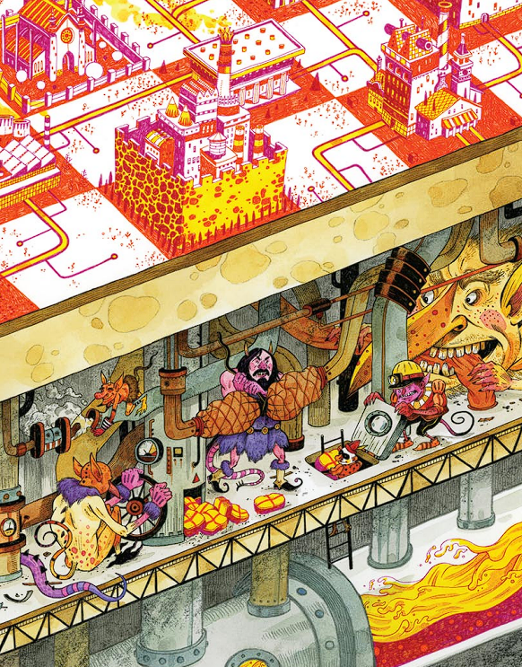

LONG
LIVE
THE
WEB

response by Taneim Miah
“Long Live The Web” is a call to action by Tim Berners-Lee where he discusses the importance of the web and warns about various limitations and dangers. In the article he writes about the principle of universality, allowing the web to work regardless of hardware, software, network, or language. This principle guides web design. Because of these technical standards, anyone is able to create applications accessibly. However, patents and web services that do not follow the standards limit innovation on the web. Berners-Lee discusses how there are many threats to the internet, like companies and governments that interfere and spy on internet traffic, which breach basic human network rights. Berners-Lee makes the statement that web applications and technologies can only grow and innovate if we protect the basic principles of the web.
To Protect The Web
Net Neutrality
Net neutrality ensures that your communications take place at the speed that you paid for. If ISPs were to remove net neutrality, it would be bad, as they could essentially control which sites you’re able to visit and connect to, via throttling internet speeds.

Freedom & Privacy
ISPs are able to peek into the packets of information that it is sending and determine every URI that any customer was on. This allows the ISP to then create targeted ads using that information. This is essentially equivalent to wiretapping, but for the internet instead. There are heavy implications for this, in that it allows ISPs and governments to shut down connections for those they deem inappropriate. In fact, there are already cases in which people get banned from the internet without due process of law.

What The Future Holds
Open Data
“Putting data on the Web and linking them is bringing dynamic new capabilities to people everywhere. It has already helped cyclists avoid accidents in London, revealed discrimination in Ohio, and helped rescue teams aid people in Haiti after the massive earthquake this past January”
Social Machines
“Lots of people post reviews and ratings of restaurants, which influence choices made by future patrons. This activity is one example of a social machine. More intricate social machines are being designed that can improve how science is done and how democracy is carried out.”
Web Science
“We have only scratched the surface of understanding how the Web reflects the real world and shapes it. Web science, a new discipline being pursued at various institutions, is revealing intriguing insights into the Web’s design, operation and impact on society”

Free Bandwidth
“Few people in developing countries can afford Internet access. Free, very low bandwidth service could greatly improve education, health and the economy in these regions yet at the same time encourage some people to upgrade to faster, paid service.”

Conclusion & Reflection
After reading the article, I am in agreement with Tim Berners-Lee. Berners-Lee pointed out the great points of the internet while warning about the dangers of it. The fight for many of the points Berners-Lee was talking about is still ongoing today. He wrote this article in 2010 as a call to action. The year today is 2023, and the battle for freedom and privacy on the web is ongoing, as ISPs and governments have lots of control still. However, a somewhat recent technology in the form of VPNs have appeared, to protect against this exact threat. Privacy and cyber security are incredibly important, and I believe that users of the internet need to take good care of their safety and freedom.